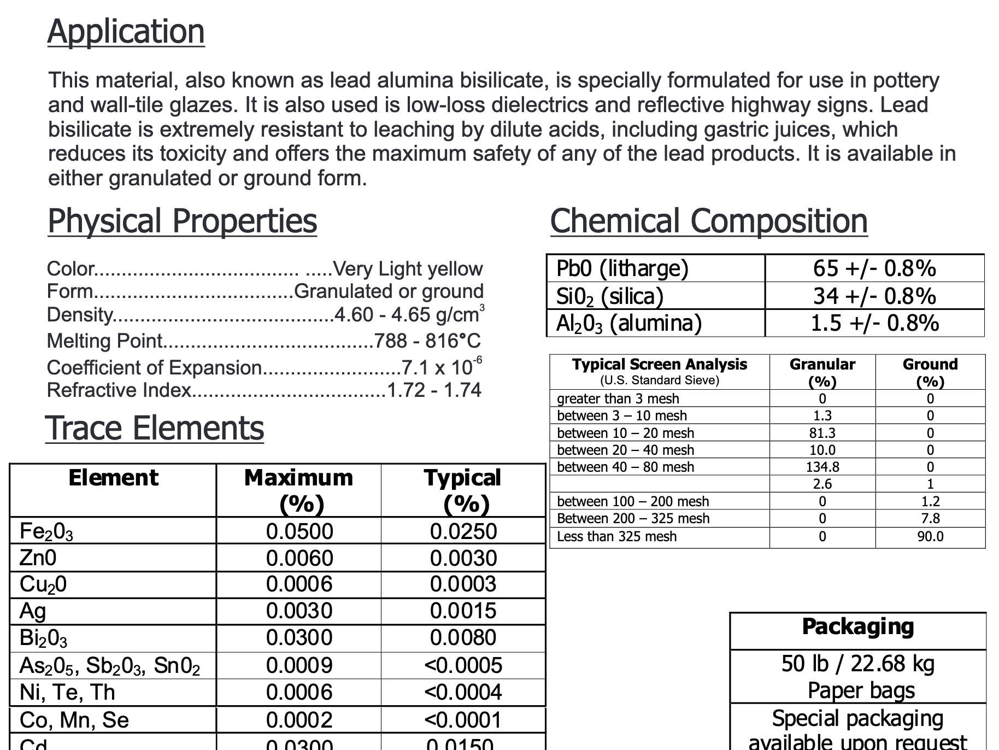
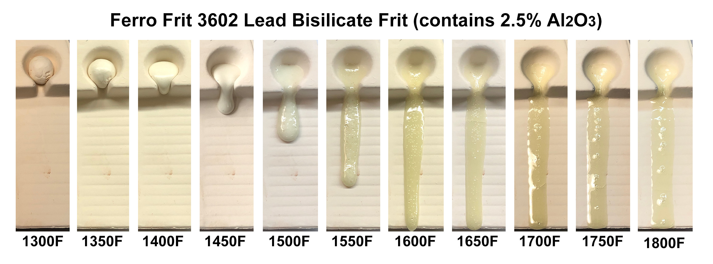
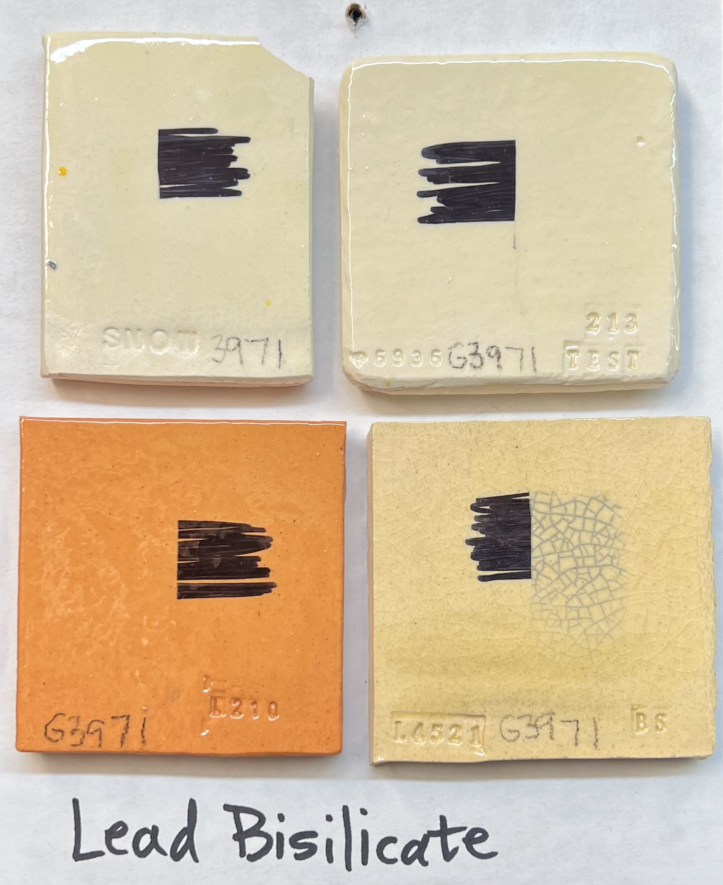
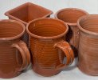
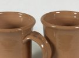

Lead in Ceramic Glazes
Lead is a melter in ceramic glazes and performs exceptionally well and must be misused to be toxic. It is also now environmentally pervasive. It is toxic and cumulative at any level of exposure.
Key phrases linking here: lead in ceramic glazes, lead glazes - Learn more
Details
Lead is a melter in ceramic glazes and performs exceptionally well at low temperatures. In fact, it has long made very low-fired terra cotta ware possible in many parts of the world. Millions of people continue to prepare and eat food from such ware even though it is clearly unsafe. Potential effects of lead exposure are tiredness, abdominal cramps, constipation, anemia, nerve damage, anorexia, vomiting, convulsions, brain damage. Lead tends to have a long slowly debilitating effect on the people it poisons. Although defenders who fought for its use were right that it can be used safely.
On the other hand, PbO is available in frits so that raw lead oxides can be completely avoided, largely eliminating their lead exposure issues for production personnel. And lead silicate chemistry produces some of the most leach-resistant glass known. Lead bisilicate, sesquisilicate and monosilicate frits span from 65% to 85% PbO. Slipware made by potters in the UK has always and continues to be made using lead bisilicate glazes that are considered safe. Bone China is still finished with transparent leaded glazes. Of course, lead frits can be added to glazes of already unstable chemistry adding a lead-release hazard to those already present (potters encounter similar issues with leaching of cobalt, chrome, manganese or other heavy metals from unstable lead-free glazes also). Thus labelling a glaze toxic because it 'contains lead' is misleading. It is a fact that bright-colored glazes contain all manner of heavy metals, that is the mechanism of their color, but industry knows how to create a stable glass that can bind the metal molecules securely. Glaze is glass, glass continues to be the most functional and safe surface for food and drink containers.
Since the 1970s, in North America, the entire ceramic industry was forced to progressively move away from leaded glazes and colors (in parallel with the move away from lead in gasoline, paint, etc). This was a response to the irresponsible use of lead up until then. The prevailing view today is that the only safe dose of lead is zero. That being said, recent findings show lead to be much more environmentally pervasive than originally thought, we are all still exposed to it every day (see the CDC page listed below), pottery glazes are not exactly on the top of the danger list.
Home Testing Kits: Lead release is normally tested by measuring how much of the glaze will dissolve in a dilute acid mixture. Inexpensive testing kits come with a neutralizer (sodium hydrate) and an indicator (sodium sulfuret). One set of instructions, for example, says to fill the vessel with white distilled vinegar (5% acetic acid) for 18 hours (or longer), stir the vinegar, fill the supplied test tube to the etched line (about 2 cc), add drops of neutralizer and invert to mix. A clear or milky solution indicates OK, shades of brown indicate lead (the concentration according the chart provided). Some of the kits available claim to be very sensitive.
Professional Testing Labs: A google search term of "lead leachate ceramics testing" or "lead release testing for ceramics" should find some. Consumer product testing companies, environmental health or public health departments, universities or research institutions may offer lead testing services (reach out to their chemistry or materials science departments).
There have been cases in the courts where glaze manufacturers were successfully sued on the premise that even glazes that passed testing based on measuring lead concentration in leachate are still a toxic lead hazard. In 1997 two lawsuits were settled in which children were allegedly harmed by lead glazes used by their mothers. One suit was brought by Sherrell McClendon and her husband Richard Duggan on behalf of their three children, one of which allegedly was harmed in utero. They sued Duncan Ceramics, Mayco Colors, and Allstate Insurance. The case settled in Summer 97 for around $500,000. The second suit was for harm that Ashley Rose Witt allegedly sustained in utero, and for harm to her mother, Patty Moore. The child's mother and father sued Duncan Enterprises, American Art Clay Co., Mayco colors, C and R Products, and Robert R. Umhoefer, Inc, in Florida. A settlement in December, 1997 provided $750,000 for the child and $115,000 for the mother. The injuries claimed in these suits occurred before 1991 when lead glazes were commonly tested for acid solubility. Lead glazes could even be labeled "lead free" if they did not release more than 0.06% on the acid leach test. Experts in the lawsuits testified that the acid test was shown to be faulty in 1992 when a nursing home patient's blood was tested after she swallowed some 'lead free' glaze.
An anecdote to motivate minimizing lead exposure to absolute minimum:
I was a potter for a decade or so in the 1970s and early 1980s. I used lead a bit experimentally but never produced ware for sale with it. I also lived near Canada's largest lead smelter in Trail BC and sometimes worked there on maintenance crews to support myself as I wasn't bringing in $$ selling pottery. Lead had been on my mind in the past, and I had researched to find out how dangerous it was.
After the lead in Flint water situation hit the news, I researched lead again and found my 1970s knowledge was completely outdated.
Because the average blood lead level in US children has declined dramatically from decades ago when lead was in gasoline, paint and plumbing, not to mention ceramics, researchers have had easier access to children with what were formerly regarded as "low" lead levels in their bodies. They haven't found a threshold level below which there is no harm. Also, if you take a child with today's average "low" blood lead level and study what happens if that level is increased a little bit, to what was decades ago thought to be a level so low there couldn't possibly be any harm as a result, the result is, a decline in I.Q. greater than if you take a child with ten times as much lead and add a bit more. I.e. the greatest harm to a population exposed to lead occurs when very low levels of lead increase a bit. Damage is thought to be irreversible. What a population-wide decline in I.Q. means is less gifted children, more retarded children, and everyone is less mentally capable than they otherwise would have been.
There was a scientist who wanted to determine the precise age of the Earth who needed to measure lead more accurately than it had ever been measured before, Clair Patterson. He discovered that human beings in the pre-industrial age had hundreds to thousands of times less lead in their bodies than typical modern urban humans such as citizens of North America, etc. He discovered that emissions of lead from the use of leaded gasoline have contaminated the entire planet, i.e. there is far more in the layers of the global ocean that have been exposed to the atmosphere recently compared to the layers not so exposed. It isn't that there are massive quantities per gallon of seawater, or per ton of urban soil, but there is enough that humans have been contaminated 100 - 1000x what they evolved to cope with (Goodle "Clair Patterson Lead" for more information).
Couple Patterson's work to the discovery that the greatest rate of damage occurs at very low levels, and throw in that it is dawning that the damage is irreversible and you have the modern view of lead. There is no place in human biology for lead. It substitutes for calcium in nerve pathways and basically screws things up. Other systems are affected as well. We did not evolve an efficient system to rid our bodies of the amounts of lead we are exposed to now.
This is why the CDC has now published its statement that there is no level of lead that is "safe", and it has lowered its "reference" level which it wants people to get upset about if they discover their children testing higher than to a fraction of what it was when we were children. Lead is so widespread that reducing human exposure to anything close to pre-industrial levels may not be economically feasible, especially given all the other problems civilization is faced with, however, all authorities are setting policy to encourage people to reduce whatever chances of exposure they are causing, then to reduce that again.
Related Information
Lead bisilicate frit data sheet claims high resistance to leaching

This picture has its own page with more detail, click here to see it.
Notice it is specifically "formulated for use in pottery glazes". And that "Lead bisilicate is extremely resistant to leaching by dilute acids, including gastric juices, which reduces its toxicity and offers the maximum safety of any of the lead products." In many countries, the use of lead glazes is still considered normal and safe. There is zero use of lead in pottery glazes in North America. Is it possible that we have tarred all lead products with the same brush? Could we at least be using it on non-functional decorated surfaces of low-fire stoneware? This would drastically reduce the energy consumption of kilns.
Ferro Frit 3602 melt flow over many temperatures

This picture has its own page with more detail, click here to see it.
This demonstrates the amazing melt behaviour of lead-as-a-flux for ceramic glazes. Not only does it melt early, but it softens slowly over a 300F range of temperatures before it goes off the end of the runway on this GLFL test. Then, when fired 200F hotter than that, it remains a stable, clear and uncrazed glass. Beginning around 1750F, this becomes a transparent glaze, by itself.
Is Mexican Terra-cotta pottery lead-glazed? Yes. Does it leach? Yes.

This picture has its own page with more detail, click here to see it.
This piece was bought in Sinaloa in 2020 (made in Puebla). By breaking it and refiring shards I estimate the firing temperature around 1800F. This lead test procedure involves leaving white vinegar in the piece overnight, pouring some of that into a test tube, dipping a cotton swab into a reagent solution and then stirring the vinegar with it. Darkening of the color indicates the concentration of lead in the leachate. It has turned black! Yet a typical fritted lead bisilicate PbO:2SiO2 glaze (having 10-15% clay to suspend it) does not leach lead (when melted well). The very thin glaze application suggests potters were trying to save money (although thin or thick does not make it more reachable). Frits are expensive, so it seems likely they are using white lead powder. But, they are not mixing enough silica to produce a stable lead silicate chemistry (likely because adding silica would require firing at a higher temperature to get a good melt).
Yet this pottery is a tradition in Mexican culture (and elsewhere) and is used for food and liquid surfaces everywhere. Some manufacturers are trying to make stoneware that retains the traditional terra cotta appearance, but many prefer this.
A lead bisilicate frit fails a leach test. Yet as-a-glaze it passes. Why?
I have soaked a lead bisilicate frit in vinegar overnight. To test whether it is leaching I pour the vinegar leachate into a test tube, soak a Q-Tip in the sensor solution and dip it into the vinegar. It turns black immediately - so we have lead in the leachate! But this is not as it seems.
Remember a key point here: The frit glass had no opportunity to be annealed - it was crash-cooled by being quenched in water. Annealing and associated toughening of the surface is a natural consequence of a glaze cooling slowly in a periodic kiln - which is why pieces made using an 85:15 mix of this same frit and kaolin, pass this test. The same 85:15 mix also still passes a lead check test if melted into an ingot and crushed into a granular powder (this is amazing given the exponential increase in surface area).
Craft store selling traditional terra cotta ware in Mexico 2020

This picture has its own page with more detail, click here to see it.
This ware is used all over the city by street-side restaurants and food vendors. And routinely used in the house. It is all lead-glazed. That glaze does not craze and thus seals the otherwise porous surface against bacterial growth. They all know to handle it with care to minimize breakage. Surfaces and edges are rough, it is poorly finished but most people value the tradition enough to not even notice. Of course factory-made ware is much stronger and more functional, and cheaper. But at meals and occasions, many seek opportunities to use this at the table and show it off to their friends.
Lead bisilicate glaze crazing unexpectedly

This picture has its own page with more detail, click here to see it.
The glaze is 85% Frit B350 and 15% EPK. These samples are about four months old. Black-markering has revealed crazing on one of the clay bodies, Plainsman Buffstone. Lead has the reputation of creating glazes that craze less than boron ones but this result challenges that. With more testing we will see.
Inbound Photo Links
|
 Lead bisilicate at a cone 05 party: With his ugly borosilicate cousins! |
 The secret of the higher gloss glaze on the right? A lead frit addition. |
Links
| Hazards |
Lead Toxicology
|
| Hazards |
Lead in Ceramic Glazes
Lead glazes may or may not be hazardous. This topic is not as clear as you might think. |
| Glossary |
Low Temperature Glaze
In ceramics, glazes are loosely classified as low, medium and high temperature. Low temperature is in the cone 06-2 range (about 1800F-2000F). |
| Glossary |
Slipware
Slipware, in the UK, is terra cotta pieces decorated at leather hard with thixotropic high ball clay slips, then bisque fired and clear glazed with lead bilisicate. |
| Materials |
Lead Sesquisilicate Frit
A standard frit of 1 molar part of PbO and 1.5 of SiO2. It melts lower than a lead bisilicate. |
| Materials |
Lead Monosilicate Frit
A standard frit of 1 molar part of PbO and 1 of SiO2. It melts lower than a lead bisilicate. |
| Materials |
Lead Bisilicate Frit
A standard frit of 1 molar part of PbO and 2 of SiO2. It is considered stable and non-leachable. |
| URLs |
https://www.cdc.gov/nceh/lead/default.htm
CDC page on Childhood Lead Poisoning Prevention |
| URLs |
https://www.atsdr.cdc.gov/csem/leadtoxicity/cover-page.html
CDC Page on Lead Toxicity |
| URLs |
https://www.p65warnings.ca.gov/fact-sheets/lead-and-lead-compounds
California Proposition 65 Lead Warnings These warnings must appear in places and on products where lead exposure is possible. |
| URLs |
https://www.accessdata.fda.gov/scripts/cdrh/cfdocs/cfcfr/cfrsearch.cfm?fr=109.16
US FDA Compliance Policy Guide download page The criteria to be considered in deciding whether to recommend legal action or to detain imports of ceramics that release lead into food or drink. |
| URLs |
https://www.leadinspector.com/
Abotex Home Lead Testing Kits |
| URLs |
https://bsclab.com/pottery-testing
BSC Labs - Glaze leachate lead testing They request submitting a cup 4 inches in diameter and 3 inches tall. |
 PayPal | No tracking, No ads, No paywall, No transient content! Just organized, concise information constantly updated and improved. Was this helpful? Consider supporting me. |
| By Tony Hansen Follow me on        |  |
Got a Question?
Buy me a coffee and we can talk 

https://digitalfire.com, All Rights Reserved
Privacy Policy